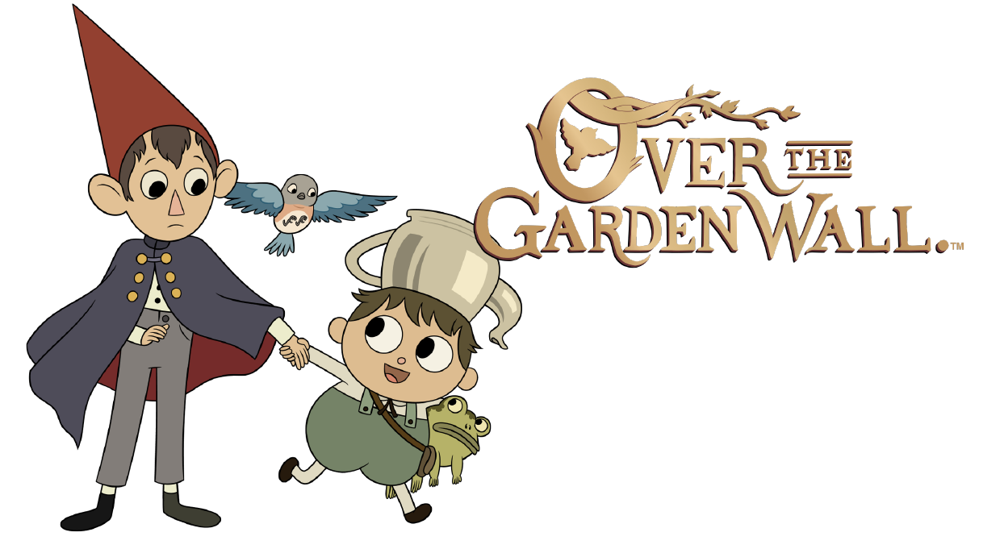

2020
• 09 h 40 min
• Animação • Aventura
A série acompanha dois irmãos que tentam achar o caminho de volta para casa enquanto viajam por uma terra misteriosa. Eles recebem auxilo de um sábio lenhador que lhes dá direções de como seguir para casa e de um pássaro azul, de nome Beatrice.